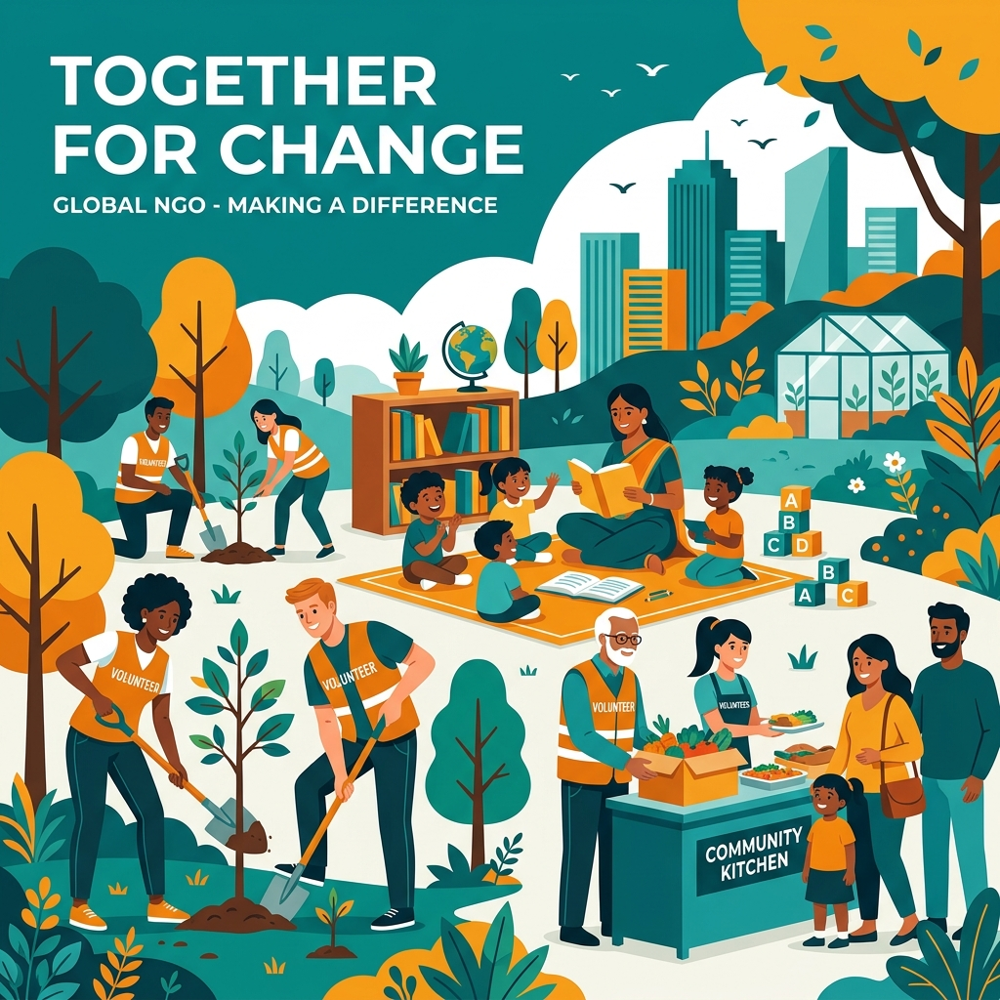

Empowering Communities. Enabling Dreams.
A registered Section 8 non-profit organization dedicated to fostering sustainable social growth through ground-level action in education, hunger alleviation, women's empowerment, environmental conservation, and animal welfare.

Driving Real Change from the Grassroots
Founded on September 23, 2020, by Mr. Govind Shukla, InAmigos Foundation is licensed by the Central Government of India to work towards community welfare, educational upliftment, and environmental sustainability.
Our Purpose & Mission
At InAmigos Foundation, we believe that real, lasting change happens when communities are empowered from within. Our efforts span multiple critical domains, integrating direct relief campaigns (like nutrition distribution) with structural developmental support (like skill workshops and educational facilities).
Operating with complete transparency, absolute passion, and zero bias, our network of young interns and volunteers operates nationwide to solve real-world problems.
Transparency
Every donation and project action is audited and shared openly with our patrons and partners.
Youth Leadership
We provide internships (#ProjectVikas) to harness the creative power of youth for social impact.
Grassroots Direct Action
We work directly on-ground in communities rather than operating solely through intermediaries.
Eco-Social Harmony
We balance community support, environmental recovery, and animal care under a single umbrella.
Our Ongoing NGO Projects
We run custom-designed projects targeting key socio-economic and environmental challenges. Use the filters below to explore our core drives.
Project SEVA
Focuses on food security and clothing dignity by distributing healthy meals and fresh apparel to underprivileged daily wage workers and homeless families.
Project BACHPANSHALA
Bridges educational gaps for underprivileged children by providing free basic education, homework support, and essential digital literacy training.
Project UDAAN
Empowers women and adolescent girls through vocational skill development, hygiene awareness drives, and career mentorship programs.
Project PRAKRITI
An environmental restoration drive organizing massive tree plantation activities, waste management campaigns, and green-lifestyle workshops.
Project JEEV
Dedicated to animal welfare by feeding, rescuing, and arranging veterinary healthcare for stray dogs, cats, and birds.
Project VIKAS
Our flagship internship program designed to train youth in social work, leadership, digital marketing, content writing, and management skills.
Measurable Impact in Numbers
Through the combined effort of our volunteers, content writers, and kind donors, we are driving measurable, positive changes across India.
0
Meals Distributed
Ensuring nutritional security
0
Saplings Planted
Enhancing green canopy
0
Children Educated
Bridging basic learning gaps
0
Active Interns
Youth driving social change
What Our Volunteers Say
Hear from the interns and content creators who drive our campaigns and share our vision using #InAmigos.
Make a Difference Today
Whether you want to offer professional skills as an intern, work directly in field projects, or support our efforts, your support is invaluable.
-
Professional Growth: Get verified experience letters, LinkedIn recommendations, and leadership mentorship.
-
Community Impact: Directly improve children's schooling, animal rehabilitation, and environmental health.
-
Flexible Roles: Work remotely in social media, design, content creation, or join our field drives.
Become a Volunteer / Intern
Fill out this form and our operations coordinator will get back to you in 24 hours.